2017年北京市中考物理试题 原卷解析
北京市2017年中考物理真题试题
一、单项选择题
1．下列物品中，通常情况下属于导体的是
A．玻璃杯B．陶瓷碗C．铁锅D．塑料勺
【答案】C
【解析】
试题分析：容易导电的物体为导体，如金属、酸碱盐的溶液、大地、人体都是导体，故C符合题意为答案。不容易导电的为绝缘体，像玻璃、陶瓷和塑料通常情况下都属于绝缘体，故ABD不符合题意。
考点：导体和绝缘体
2．图 1 所示的光现象中，由于光的反射形成的是

【答案】A

考点：光的反射
3．下列措施中，能使蒸发减慢的是
A．给湿头发吹热风 B．把湿衣服晾在通风向阳处
C．把盛有酒精的瓶口盖严 D．将玻璃板上的水滴向周围摊开
【答案】C
【解析】
试题分析：影响蒸发的因素有液体温度的高低、液体表面积大小、液体表面上方的空气流动快慢。所以减慢蒸发，就是从降低温度、减小液体面积和减慢空气流动这三个方面来采取措施。
A． 给湿头发吹热风，既提高了液体的温度，又加快了液体表面空气流动的速度，加快了蒸发，故A不符合题意。
B． 把湿衣服晾在通风向阳处，提高了液体温度、加快了空气流动，所以加快了衣服上水分蒸发，故B不符合题意。
C． 把盛有酒精的瓶口盖严减慢了酒精上方的空气流动，从而减慢了酒精的蒸发，故C符合题意为答案。
D． 将玻璃板上的水滴向周围摊开，增大了液体的表面积，加快了蒸发，故D 不符合。
不符合。
考点：影响蒸发快慢的因素
4．下列家用电器中，将电流热效应作为工作原理的是
A．电视机 B．电热水器 C．抽油烟机 D．电冰箱
【答案】B

考点：电流的热效应
5．下列物态变化的实例中，属于液化的是
A．初春，积雪消融 B．夏天，草叶上形成露珠
C．深秋，屋顶的瓦上结了一层霜D．冬天，室外冰冻的衣服变干了
【答案】B
【解析】
试题分析：
A．初春，积雪消融，是物质由固态变成液态，属于熔化现象，故A不符合题意。
B．夏天，草叶上形成露珠是空气中的水蒸气遇冷液化为小水珠，是液化现象，故B符合题意为答案。
C．深秋，屋顶的瓦上结了一层霜，这是空气中的水蒸气由气态直接变为固态，属于凝华现象，故C不符合题意。
D．冬天，室外冰冻的衣服变干了是由固态的冰直接变成水蒸气，是升华现象，故D不符合题意。
答案为B
考点：液化现象
6．用大小不同的力先后敲击同一个音叉，比较音叉两次发出的声音，下列说法中正确的是
A．响度不同 B．音调不同 C．音色不同 D．频率不同
【答案】A
【解析】
试题分析：用大小不同的力先后两次敲击同一个音叉时，音叉振幅不同，发出声音的响度就不同，故A正确为答案，选项BCD错误。
考点：响度
7．水平桌面上竖直放置着平面镜和直立的铅笔，平面镜中呈现铅笔的虚像。当铅笔与平面镜之间的距离为8cm 时，像的高度为 h1，像到平面镜的距离为 s1；当铅笔与平面镜之间的距离为 4cm 时，像的高度为 h2，像到平面镜的距离为 s2。则下列四个选项中，判 断正确的是
A．s1=s2 B．s1<s2 C．h1>h2D．h1=h2
【答案】D

考点：平面镜成像的特点
8．图 2 所示的实例中，目的是为了减小摩擦的是

【答案】A
【解析】
试题分析：
A．给自行车轴加润滑油，是通过使接触面分离的方法来减小摩擦，故A符合题意为答案。
B．轮胎上制有花纹，是在压力一定时，增大接触面粗糙程度来增大摩擦力，故B不符合题意。
C．用起瓶器夹紧瓶盖，是通过增大压力来增大摩擦，故C不符合题意。
D．防滑垫表面做的凹凸不平，是在压力一定时，通过增大接触面的粗糙程度来增大摩擦力的，故D不符合题意。
考点：减小摩擦的方法
9．图 3 所示的工具中，在使用时属于费力杠杆的是

【答案】D
 考点：杠杆的种类
考点：杠杆的种类
10．下列选项中符合安全用电要求的是
A．用湿手按已接电源的插座上的开关
B．及时更换家庭电路中绝缘皮老化、破损的导线
C．在未断开电源开关的情况下，用湿布擦拭电视机
D．把用电器的三脚插头改为两脚插头接在两孔插座上使用
【答案】B
【解析】
试题分析：
A．不纯净的水容易导电，用湿手按已接电源的插座上的开关，容易发生触电事故，故A不符合安全用电要求。
B．电线的绝缘皮老化、破损时应及时更换，否则容易发生触电事故，故B符合安全用电要求。
C．湿布是导体，在未断开电源开关的情况下，用湿布擦拭电视机容易发生触电事故，故C不符合安全用电要求。
D．把用电器的三脚插头改为两脚插头接在两孔插座上使用，这样当金属外壳漏电时，没有接地保护，容易引发触电事故，故D不符合安全用电要求。
考点：安全用电
11．下列实例中，用热传递的方式来改变物体内能的是
A．用热水袋暖手，手的温度升高
B．用锯条锯木板，锯条的温度升高
C．两手相互摩擦，手的温度升高
D．用手反复弯折铁丝，弯折处铁丝的温度升高
【答案】A

考点：热传递改变物体内能
12．下列说法中正确的是
A．放大镜的镜片是凹透镜
B．照相机的镜头是 凹透镜
C．近视眼镜的镜片是凸透镜
D．远视眼镜的镜片是凸透镜
【答案】D
【解析】
试题分析：
A． 放大镜是凸透镜，当物体到透镜的距离小于焦距时，成正立、放大的虚像，故A错误。
B． 照相机的镜头是凸透镜，故B错误。
C． 近视眼镜是凹透镜，故C错误。
D． 远视眼的镜片是凸透镜，故D正确为答案。
考点：凸透镜
13．小玲家有额定电压相同的电烤箱、电饭锅和电视机各一个，按照每度电 0.5 元的计费标准，将这三个用电器 正常工作 1小时的用电费用绘制成了如图 4 所示的柱状图。则下列四个选项中，判断正确的是

A．在这三个用电器中，电烤箱正常工作时的电 压最高
B．在这三个用电器中，电视机正常工作时的电压最低
C．正常工作时，通过电烤箱的电流大于通过电视机的电流
D．在一个月内，小玲家电烤箱的用电费用一定比电饭锅的用电费用多
【答案】C

考点：电能
14．图 5 所示的电路中，电源两端的电压保持不变，R2 为定值电阻。闭合开关 S，在滑动 变阻器的滑片 P 向右滑动的过程中，关于电压表和电流表的示数变化，下列四个选项中，判断正确的是

A．电压表、电流表示数均变大
B．电压表、电流表示数均变小
C．电压表示数变大，电流表示数变小
D．电压表示数变小，电流表示数变大
【答案】C

考点：动态电路分析
15．为验证阿基米德原理，小明将电子秤放在水平桌面上并调零，然后将溢水杯放到电子秤上，按实验操作规范将溢水杯中装满水，再用细线系住铝块并将其缓慢浸入溢水杯 的水中，如图 6 所示，铝块始终不与溢水杯接触。则下列四个选项中，判断正确的是

A．铝块浸没在水中静止时与铝块未浸入水中时相比，水对溢水杯底的压力变小
B．铝块浸没在水中静止时与铝块未浸入水中时相比，水对溢 水杯底的压强变大
C．铝块浸没在水中静止时，绳对铝块的拉力等于铝块排开水的重力
D．铝块浸没在水中静止时与铝块未浸入水中时相比，若电子秤示数不变，则验证了阿基米德原理
【答案】D
【解析】
试题分析：
A．铝块浸没在水中静止时与铝块未浸入水中时相比，溢水杯中水的深度不变，根据公式p=ρgh可知，水对溢水杯底的压强不变，由压强公式F=pS可知，水对溢水杯底的压力不变，故A错误。
B．铝块浸没在水中静止时与铝块未浸入水中时相比，溢水杯中水的深度不变，根据公式p=ρgh可知，水对溢水杯底的压强不变，故B错误。
C．铝块浸没在水中静止时，绳对铝块的拉力F拉=G-F浮，故C错误。
D．铝块浸没在水中静止时与铝块未浸入水中时相比，若电子秤示数不变，则说明铝块受到的浮力等于排开水的重力，验证了阿基米德原理，故D正确。
答案为D。
考点：阿基米德原理
二、多项选择题
16．图 7 展示了我国古代劳动人民的智慧成果，对其中所涉及的物理知识，下列说法中正确的是

A．古代捣谷工具利用了杠杆原理
B．光沿直线传播是日晷能够测量时间的条件之一
C．碾谷物的石磨选用厚重的石材，目的是为了减小石磨对谷物的压强
D．从两心壶的壶嘴能分别倒出两种不同的液体，这一功能的实现利用了大气压
【答案】ABD

考点：杠杆原理 光的直线传播 压强 大气压
17．下列说法中正确的是
A．用磁感线可以描述磁场的强弱
B．只要导体在磁场中运动，该导体中就会产生感应电流
C．通电导体产生的磁场的方向与通过该导体的电流方向有关
D．利用撒在磁体周围的铁屑可以判断该磁体周围各点的磁场方向
【答案】AC
【解析】
试题分析：
A、用磁感线可以描述磁场的强弱，磁感线越密的地方，磁场越强，故A正确。
B．闭合电路的一部分导体在磁场中做切割磁感线运动时，产生感应电流。所以导体在磁场中运动，不一定会产生感应电流，故B错误。
C、奥斯特实验说明了通电导体周围存在磁场，该实验还表明电流方向改变时，其磁场方向也随之改变，所以，通电导体产生的磁场的方向与通过该导体的电流方向有关，故C正确。
D．利用铁屑可以看到磁体周围磁场的分布情况，但看不到磁场方向，小磁针在磁场中某一点静止时，N极的指向即为该点磁场的方向，故D错误。
答案为AC。
考点：磁感线 电磁感应 电流的磁效应
18．有关热现象，下列说法中正确的是
A．组成物质的分子之间存在引力和斥力
B．在热传递过程中，吸收热量的物体温度升高
C．在四冲程内燃机中，做功冲程的功能是将内能转化为机械能
D．温度低于 0℃的室外，仍有水蒸气存在
【答案】ACD

考点：分子动理论 热传递 做功冲程 蒸发现象
19．下列说法中正确的是
A．以行驶的汽车为参照物，路边的树木是运动的
B．只要物体的位置发生变化，物体的机械能就发生变
C．悬浮在盐水中的鸡蛋，受到盐水的作用力的合力为零
D．用锤子将铁钉钉入木板，锤子对铁钉的作用力与铁钉对锤子的作用力大小相等
【答案】AD
【解析】
试题分析：
A．以行驶的汽车为参照物，路边树木的位置是变化的，所以路边的树木是运动的，故A正确。
B．物体的位置发生变化，但物体的速度和高度不变，则物体的机械能就不会发生变化。比如物体在水平方向上做匀速直线运动时，机械能不变，故B错误。
C．鸡蛋悬浮时，受到的盐水的作用力为浮力，此时浮力的大小等于重力，所以不为0，故C错误。
D．用锤子将铁钉钉入木板，锤子对铁钉的作用力与铁钉对锤子的作用力大小是一对相互作用力，大小相等，方向相反，故D正确。
答案为AD。
考点：参照物 相互作用力 机械能
三、实验选择题
20．图 8 所示的四个光路图中，MM′为平面镜，PO 为入射光线，ON 为法线，入射角∠PON 等于 60°，其中符合光的反射定律的光路图是

【答案】A

考点：光的反射光路图
21．在探究石蜡和海波的熔化规律时，小琴根据实验目的，进行了认真规范的实验，获得 的实验数据如下表所示。则下列四个选项中，判断正确的是
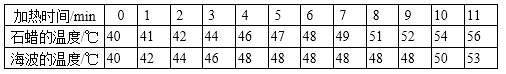
A．石蜡是非晶体
B．海波熔化时的温度是 48℃
C．海波在熔化过程中不需要吸热
D．42℃时，海波的状态是固态
【答案】ABD
【解析】
试题分析：
A．由表格中数据可知，海波从第4min~9min，经历了5min，在此过程中温度保持不变，所以海波是晶体。而石蜡在整个过程中吸收热量，温度不断升高，所以石蜡是非晶体，故A正确。
B．在4-9min时，海波吸收热量，在熔化过程温度保持48℃不变，故海波熔化时的温度是48℃，即熔点为48℃，故B正确。
C．海波是晶体，晶体熔化的特点是：吸收热量但温度不变，故C错误。
D．海波的熔点是48℃时，42℃低于海波的熔点，此时海波是固态，故D正确。
考点：晶体 非晶体
22．中国科技馆有一个“会发电的衣服”的展台，在展台中可以做模拟“发电纤维发电” 的实验。实验过程及现象如下：踩动踏步机踏板，带动压电薄膜振动，使得一些与压 电薄膜相连的小灯发光；增大踩动踏板的频率，压电薄膜振动得更剧烈，发光小灯的 数量增加。则下列四个选项中，判断正确的是
A．压电薄膜振动时可以产生电压
B．小灯发光说明振动的压电薄膜中产生了电流
C．发光小灯的数量与踩动踏板的频率有关
D．增大踩动踏板的频率，压电薄膜发电的总功率变小
【答案】ABC
考点：电磁感应 电功率
23．在测量金属块密度的实验中，小明先将天平放在水平桌面上，将游码放到标尺左端的 零刻线处，调节平衡螺母，使天平横梁在水平位置平衡；小明将金属块放在调节好的 天平左盘内，改变右盘中砝码的个数和游码的位置，使天平横梁在水平位置重新平衡， 右盘中所放砝码及游码在标尺上的位置如图 9 甲所示；然后，小明将系好细线的金属 块放入盛有 50ml 水的量筒中，量筒中的水面升高到如图 9 乙所示的位置。根据实验过 程及现象，下列四个选项中，判断正确的是
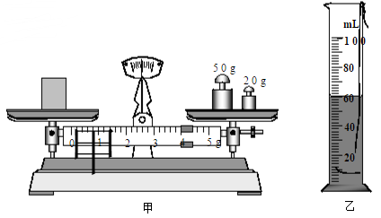
A．指针指在分度盘中央刻线处静止时，表明天平横梁在水平位置平衡了
B．金属块的质量为 74g
C．金属块的体积为 60 cm3
D．金属块的密度为 7.4×103 kg/m3
【答案】ABD
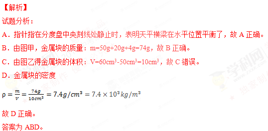
考点：密度的测量
24．小杨做凸透镜成像规律的实验。将焦距为 10cm 的凸透镜固定在 光具座上 50cm 刻度线 处，光屏和点燃的蜡烛位于凸透镜两侧，实验前调整烛焰中心、透镜中心和光屏中心 在同一水平高度，如图 10 所示。则下列四个选项中，判断正确的是
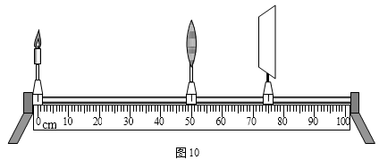
A．若蜡烛放置在 10cm刻度线处，移动光屏，在光屏上不能呈现烛焰清晰的像
B．若蜡烛放置在 20cm刻度线处，移动光屏，可在光屏上呈现烛焰清晰放大的实像
C．若蜡烛放置在 35cm刻度线处，移动光屏，可在光屏上呈现烛焰清晰放大的实像
D．若蜡烛放置在 45cm刻度线处，移动光屏，可在光屏上呈现烛焰清晰缩小的实像
【答案】C
【解析】
试题分析：凸透镜的焦距是10cm，凸透镜固定在光具座上50cm刻度线处，
A．小杨将蜡烛移至10cm刻度线处时，蜡烛到透镜的距离u=40cm，即物距u＞2f，移动光屏，就会得到倒立、缩小的实像，故A错误。
B．若蜡烛放置在20cm刻度线处，此时物距u=30cm＞2f，移动光屏，就会得到倒立、缩小的实像，故B错误。
C．若蜡烛放置在35cm刻度线处，此时物距大于1倍焦距小于2倍焦距，移动光屏，就会得到倒立、放大的实像，故C正确。
D．若蜡烛放置在45cm刻度线处，蜡烛到透镜的距离小于1倍焦距，成正立、放大的虚像，在光屏上不能承接，故D错误。
答案为C。
考点：凸透镜成像规律
25．下列问题中，属于可探究的科学问题 的是
A．用“仰仪”这种天文观测仪器观测太阳的位置有什么好处？
B．声波的波长越大，声波的传播速度越大吗？
C．编钟发出的声音的音调高低跟编钟的钟体大小有关吗？
D．家庭电路中电流的频率跟哪些因素有关？
【答案】BC
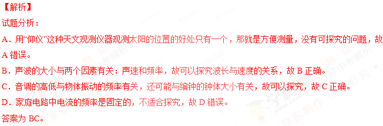
考点：科学探究
26．小林想测量小灯泡的额定功率及正常发光时的电阻，小灯泡的额定电压为 2.5V，实验 电路如图 11 甲所示。实验中，当电压表示数为 2.5V 时，电流表示数如图 11 乙所示。 根据实验过程及现象，下列四个选项中，判断正确的是
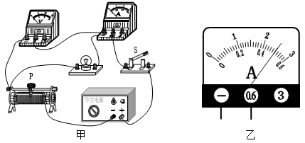
A．为使小灯泡正常发光，电压表示数应为 2.5V
B．图 11 乙中的电流表示数为 2.5A
C．小灯泡正常发光时的电阻为 5Ω
D．小灯泡的额定功率为 5W
【答案】AC
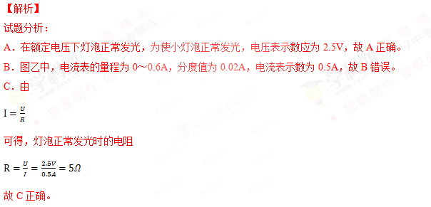
D．小灯泡的额定功率P额=U额I=2.5V×0.5A=1.25W，故D错误。
答案为AC。
考点：灯泡电功率和电阻的测量
27．为了比较两种新型保温材料甲和乙的保温效果，将这两种保温材料分别做成形状、结 构、厚度完全相同的保温筒，两保温筒内同时分别放置完全相同、温度均为 80℃的恒 温源，其截面图如图 12 所示。将两保温筒放在室温为 20℃的房间内，每隔 1 0min 测 量一次两保温筒外表面 A 点和 B 点处的温度，根据记录的实验数据绘制的图像如图 13 所示，图中图像Ⅰ表示保温材料甲做成的保温筒外表面温度随时间变化的图像，图像 Ⅱ表示保温材料乙做成的保温筒外表面温度随时间变化的图像。根据实验过程及图像， 下列四个选项中，判断正确的是
A．可用单位时间内保温筒外表面的温度变化表示保温效果
B．甲材料的保温效果比乙材料的保温效果好
C．乙材料的保温效果比甲材料的保温效果好
D．如果把两保温筒内 80℃的恒温源换成-18℃的恒温源，其它条件不变，则无法比较甲、乙两种保温材料的保温效果
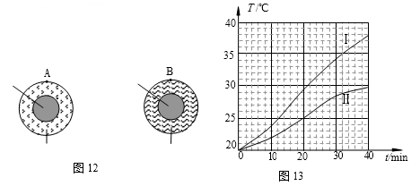
【答案】AC
【解析】
试题分析：由图可知，在相等时间内，保温材料乙做成的保温筒外表面温度变化小，乙材料的保温性能好，所以可用单位时间内保温筒外表面的温度变化表示保温效果，故AC正确，B错误。
D．如果把两保温筒内80℃的恒温源换成-18℃的恒温源，其它条件不变，可以通过相同时间，升高的温度多少来比较甲、乙两种保温材料的保温效果，故D错误。
答案为AC。
考点：温度
28．如图 14 所示的电路中， R1、R2 均为定值电阻，实验时，干电池两端电压会随电路中 电阻的变化而改变。在不拆改电路的情况下，下列选项中的探究问题，利用这个电路进行实验能完成的是
A．电路中的电流一定时，电阻两端的电压与电阻成正比吗？
B．电阻一定时，通过电阻的电流与电阻 两端的电压成正比吗？
C．电阻两端电压一定时，通过电阻的电 流与电阻成反比吗？
D．电阻一定时，电阻消耗的电功率与电阻两端的电压的平方成正比吗？
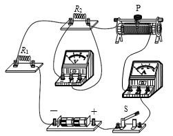
【答案】BD
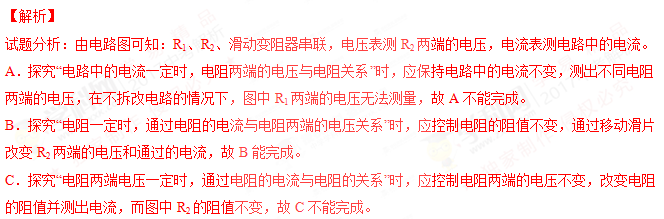
D．探究“电阻一定时，电阻消耗的电功率与电阻两端的电压关系”时，应控制电阻的阻值不变，通过移动滑片改变R2两端的电压，且根据P=UI可测出R2的功率，可以研究电阻消耗的电功率与电阻两端的电压关系，故D能完成。
答案为BD。
考点：欧姆定律的应用 电功率
29．下列说法中正确的是
A．探究物体所受重力大小与物体的质量的关系时，物体密度是需要控制的变量
B．探究液体内部压强大小与液体的质量的关系时，液体密度是需要控制的变量
C．探究物体所受压力大小与物体所受重力大小的关系时，物体的受力面积是需要控制
的变量
D．探究物体所受滑动摩擦力大小与物体所受重力大小的关系时，物体对接触面的压力是需要控制的变量
【答案】BD
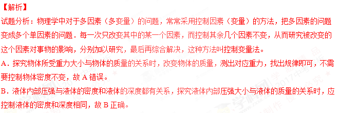
C．探究物体所受压力大小与物体所受重力大小的关系时，应改变物体的重力，观察压力的作用效果是否相同找出规律，不需要控制物体的受力面积不变，故C错误。
D．滑动摩擦力与压力和接触面的粗糙程度都有关系，探究物体所受滑动摩擦力大小与物体所受重力大小的关系时，应控制物体对接触面的压力和受力面积相同，故D正确。
答案为BD。
考点：控制变量法
30．如图 15 所示是小成测量未知电阻 Rx 的实验电路，电源两端电压不变，其中 R0 为阻值 已知的定值电阻。当开关 S、S1 闭合，开关 S2 断开时，电流表示数为 I1；当开关 S、 S2 闭合，开关 S1 断开时，电流表示数为 I2。则下列四个选项中，Rx 的表达式正确的是
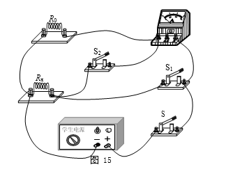
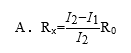
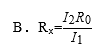
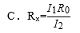
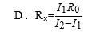
【答案】D
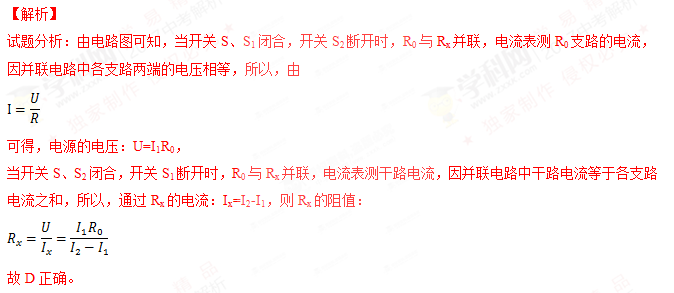
考点：欧姆定律的应用
四、实验解答题
31．如图 16 所示，物体A的长度是_______________cm。
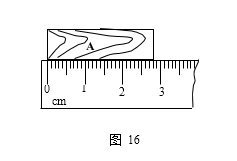
【答案】2.8
【解析】
试题分析：刻度尺的最小分度值为1mm，起始端从0开始，末端刻度值为2.80cm，所以物体的长度为L=2.80cm。
考点：长度的测量
32．图 17 所示的电阻箱的示数是_____________Ω。
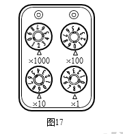
【答案】2098
考点：电阻箱的读数
33．图 18 所示的弹簧测力计的示数是_____________N。
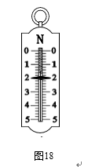
【答案】2
【解析】
试题分析：由图知：弹簧测力计的分度值为0.2N，指针正好指在2N的刻度上，因此弹簧测力计的示数为2.0N。
考点：弹簧测力计的使用
34．有一种用新型材料制成的电阻，小明通过实验探究该电阻大小与某个预想的因素是否 有关。他将该电阻、电流表和开关串联起来，接在电源两端。先用冷风使电阻降温， 闭合开关，观测电流表示数为I1，并记录，断开开关。再用热风使电阻升温，闭合开关， 观测电流表示数为I2，并记录。他发现：I1< I2。则小明所探究问题的自变量是：_____________。
【答案】电阻的温度
【解析】
试题分析：根据题意，先用冷风使电阻降温，再用热风使电阻升温，是通过改变电阻的温度来改变电阻的，从而改变电流，使得I1＜I2，故小明所探究问题的自变量是：电阻的温度。
考点：影响电阻大小的因素
35．在串联电路中， 探究部分电路两端的电压 U跟该电路中某个可变电阻 R的关系 时，记录的实验数据如下表所示。 请根据表中数据判断： 当电阻 R=5Ω 时， 电 压 U= V。
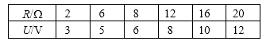
【答案】4.5
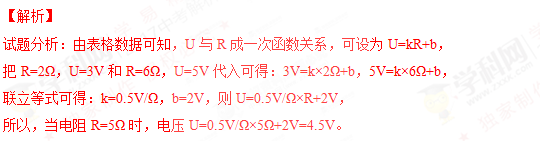
考点：欧姆定律的应用
36．在验证电流产生磁场的实验中，小东连接了如图 19 所示的实验电路。他把小磁针（图 中没有画出）放在直导线 AB 的正下方，闭合开关后，发现小磁针指向不发生变化。 经检查，各元件完好，电路连接无故障。
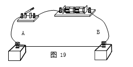
（1）请你猜想小磁针指向不发生变化的原因是_____________。
（2）写出检验你的猜想是否正确的方法：_____________。
【答案】（1）小磁针与直导线距离远。
（2）使小磁针尽量靠近直导线，小磁针静止时，给直导线通电。观察小磁针指向是否变化。若小磁针指向变化，说明猜想正确；若小磁针指向不变化，说明猜想错误。
【解析】
试题分析：（1）在验证电流产生磁场的实验中，小东连接了如图所示的实验电路，他把小磁针（图中没有画出）放在直导线AB的正下方，闭合开关后，发现小磁针指向不发生变化。 经检查，各元件完好，电路连接无故障：说明电流一定时，磁场的强弱应该与距离有关，故猜想小磁针指向不发生变化的原因是小磁针与直导线距离远。
（2）检验方法：使小磁针尽量靠近直导线，静止时，给直导线通电，观察小磁针指向是否变化，若小磁针指向变化，说明猜想正确。若小磁针指向不变化，说明猜想错误。
考点：电流的磁效应
37．为了比较活性炭和石英砂对泥水的过滤效果，小东选用的实验器材有：两个相同的下
端带有漏水小孔的透明圆柱形容器甲和乙，活性炭、锰砂、石英砂、鹅卵石四种过滤材料。在甲容器里依次装入活性炭、石 英砂、锰砂、鹅卵石四种过滤材料，每种材料的厚度均为 3cm，如图 20 甲所 示。在乙容器里依次装入石英砂、锰砂、 鹅卵石三种过滤材料，每种材料的厚度 均为 3cm，如图 20 乙所示。把摇晃均匀 的一瓶泥水分成相等的两份，分别缓慢 全部倒入甲、乙两容器中，发现经甲容 器过滤后的泥水比经乙容器过滤后的 泥水透明程度高。于是小东得出了结论：活性炭对泥水的过滤效果比石英砂对泥水的过滤效果好。
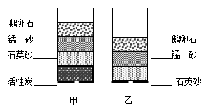
（1）请写出小东实验过程中存在的问题：_____________。
（2）请你针对小东实验过程中存在的问题，写出改正的步骤：_____________。
【答案】（1）甲容器中活性炭上面的过滤材料与乙容器中石英砂上面的过滤性材料不相同。
（2）将甲、乙两容器清空后，在甲容器中依次装入活性炭、锰砂、鹅卵石，材料厚度均为3cm。在乙容器中依次装入石英砂、锰砂、鹅卵石，材料厚度均为3cm。
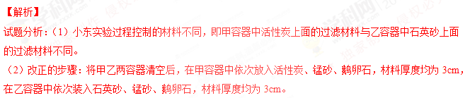
考点：控制变量法
38．在探究“物体动能的大小与物体质量是否有关”的实验中，需要控制物体的速度大小 相等。为了控制物体的速度大小相等，小华选用了体积相等、质量不等的金属球 A 和 B，利用如图 21 所示的带滑槽的轨道进行实验。小华认为：如果 A、B 两球先后从轨 道上同一高度处由静止开始释放，则 A、B 两球到达轨道零刻度线处的速度大小相等。 小刚对小华的观 点提出了质疑。请你根据实验需要，添加适当的器材，设计实验检验小华的观点是否正确。请你写出检验的实验步骤。
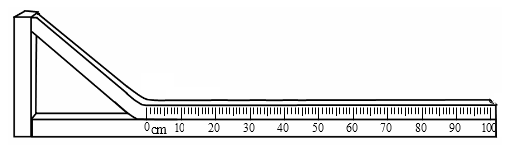
【答案】将完全相同的两个带有滑槽的轨道并排放在水平桌面上，使两端对齐。将A、B两个金属球分别放置在两个轨道的最高点，从静止开始同时释放，观察两球是否一直并排滚动，直到轨道零刻度线处。
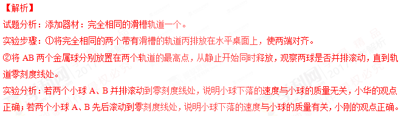
考点：探究物体动能的大小与物体质量是否有关
39．浸在液体中的物体所受浮力为 F，物体排开液体的体积为 V，小明认为：任何情况下， F 都与 V 成正比。请自选器材，设计实验证明小明的观点是错误的。
【答案】将挂在弹簧测力计挂钩上的铝块，浸没在A容器的酒精中，铝块排开酒精的体积即为铝块的体积V1，记录此时弹簧测力计示数F1。将铝块从酒精中取出后擦干，再缓慢浸入B容器的水中，当弹簧测力计示数等于F1时，发现铝块排开水的体积V2小于V1。这个实验说明铝块受到的浮力与铝块排开液体的体积不成正比，所以小明的观点是错误的。
【解析】
试题分析：影响浮力大小的因素有两个：液体的密度和排开液体的体积。
小明认为：任何情况下，浮力F都与排开液体的体积V成正比，可以通过改变液体密度的方法来证明小明的观点是错误的。
实验步骤：①将挂在弹簧测力计挂钩上的铝块浸没在A容器的酒精中，铝块排开酒精的体积为铝块的体积V1，记录此时测力计的示数为F。
②将铝块从酒精中取出后擦干，再挂在测力计下慢慢浸入B容器中的水中，当测力计示数为F时，发现铝块没有全部浸入水中，即铝块排开水的体积V2＜V1。
这个实验证明铝块受到的浮力与铝块排开的体积不成正比，故小明的观点是错误的。
考点：阿基米德原理
40．实验桌上有电源一个、开关一个、导线若干以及如图 22 所示的两个完全相同的保温烧 瓶。烧瓶内装有完全相同的温度计和阻值相等且不变的电阻丝 R，甲烧瓶内装有水，乙 烧瓶内装有煤油，水和煤油的质量相等，初温相同。水和煤油的比 热容如下表所示。以 上器材均能满足实验要求，请利用上述实验器材，设计一个实验证明：液体温度的变化 与液体的比热容有关。请画出实验电路图，写出实验步骤，画出实验数据记录表格。
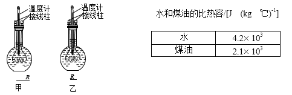
【答案】（1）实验电路图
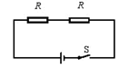
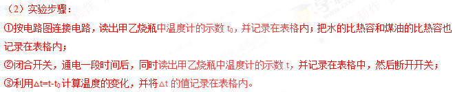
（3）实验数据记录表格
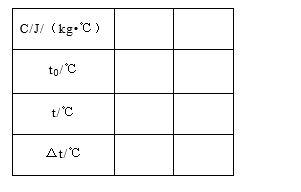
【解析】
试题分析：（1）探究液体温度的变化与液体的比热容有关时，应控制两种液体吸收的热量相同，即两个电阻在相同的时间内放出的热量是相同的，故要用两个相同的电阻串联接入电路中，如图所示：
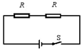
（2）实验步骤：
①按电路图连接电路，读出甲乙烧瓶中温度计的示数t0，并记录在表格内；把水的比热容和煤油的比热容也记录在表格内；
②闭合开关，通电一段时间后，同时读出甲乙烧瓶中温度计的示数t，并记录在表格中，然后断开开关；
③利用△t=t-t0计算温度的变化，并将△t的值记录在表格内。
（3）实验数据记录表格
考点：控制变量法
41．实验台上有满足实验要求的器材：弹簧测力计 1 个， 所受重力为 1N 的钩码 2 个，带支架的杠杆 1 个。杠 杆上相邻刻度间距离均为 0.05m，刻线上下靠近杠 杆边缘处均有圆形小孔，可用来挂钩码或弹簧测力 计，如图 23 所示。请利用上述实验器材，设计一个 实验证明：“杠杆在水平位置平衡时，如果动力臂 L1 保持不变，则 F1=k F2 L2” ，式中 F1 表示动力， k 是常量，F2 表示阻力，L2 表示阻力臂。
请写出实验步骤，画出实验数据记录表格。
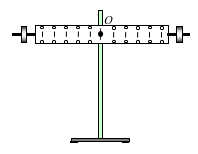
【答案】实验步骤：
①带支架的杠杆放在水平位置，调节杠杆使其水平平衡；
②将重力为1N的钩码（阻力F2）挂在支点右侧0.05m处（阻力臂L2），将弹簧测力计的挂在支点右侧的0.1m处竖直向上拉弹簧测力计，使杠杆水平平衡，读出弹簧测力计的示数（动力F1），将F2、L2、F1的数据记录在表格中；
③保持弹簧测力计的位置不动，将重为1N的钩码依次挂在支点右侧0.1m、0.15m、0.2m、0.25m处，仿照步骤②再做4次，将F2、L2、F1的数据记录在表格中；
④保持弹簧测力计的位置不动，将两个重为1N的钩码挂在支点右侧0.05m处，竖直向上拉弹簧测力计，使杠杆水平平衡；将F2、L2、F1的数据记录在表格中．
⑤根据实验数据计算出F2与L2的乘积，并记录在表格中。
实验数据记录表格：
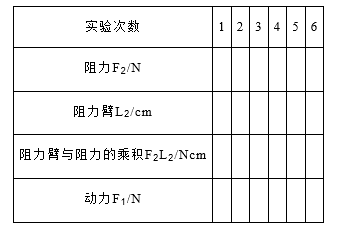
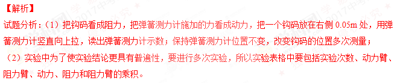
考点：探究杠杆的平衡条件
五、科普阅读题
42. 洛阳桥 被誉为“福建桥梁状元”的洛 阳桥坐落于福建泉州洛阳江上。又名“万安桥”， 如图24所示。
洛阳桥始建于北宋1053年，工程历时七年。桥原长 1200多米，宽约5米，有桥墩46座，扶栏500个，石狮28 个 ，石亭7座，石塔9座，规模宏大，是中国古代著名的 梁式石桥。桥由当时的郡守蔡襄主持兴建。
洛阳桥的桥址位于江海汇合处，水深流急，建造桥
基十分困难，桥基随时可能陷落坍塌、甚至被冲入海。洛阳桥的建桥工程，规模巨大，结 构工艺技术高超，影响深远。像近代桥梁的“筏形基础”，在国外尚不足百年； “浮运架 梁法”今日还很通行；“种蛎固基法”将生物学应用于桥梁工程，堪称绝妙。关键性的工程 分为如下几个阶段: 首先在江中沿桥址中线，向江中抛填石料，形成一条横跨过江的矮石堤。石堤宽约 25 米，而长度达 500 余米。 然后，匠师们利用洛阳江里盛产牡蛎这一自然条件，在矮石堤上散置蛎房。由于牡蛎繁殖 力强，石堤里外间隙，成片成丛、密集繁生，两三年时间，就将原本松散的石堤胶结成一 牢固整体。同时，石堤经受浪潮往复冲击，逐渐密实，底层石料嵌入流沙，使整条石堤变 得格外稳固。这样筑成的桥墩底盘，用作桥基，即现代桥梁工程中的所谓“筏形基础”，既 增大了基础的面积，又增强了基础的整体性，能有效防止不均匀沉降。 在“筏形基础”上，再用巨型条石，齿牙交错，互相叠压，逐层垒砌，筑成桥墩，墩的上 下游两头，俱作尖形，以分水势。墩基间亦置大量牡蛎胶粘，潮汐来去，不能冲动。两墩 间净孔，约在一丈五六尺。沿岸开采的石梁，预先放在浮排上，等到两邻近桥墩完成后， 即趁涨潮之时，驶入两桥墩间，待潮退，浮排下降，石梁即可落在石墩上，全桥石梁 300 余条，每条约二三十吨重，皆“激浪涨舟，浮运架梁”而成。
洛阳桥的建成，为我国石桥建筑提供了宝贵的经验。历经地震、飓风、水患和战争， 洛阳桥经受了几百年的考验，依然屹立，堪称我国古代桥梁史上的伟大创举。 请根据上述材料，回答下列问题： 42．经勘测发现某地块承载能力比较薄弱，如果要在该地块建筑一座高塔，容易发生局部
沉降或坍塌。为了避免发生局部沉降和坍塌问题，请你借鉴洛阳桥成功建桥的经验， 提出一个解决方案，并写出你的理由。
【答案】可以借鉴洛阳桥的筏形基础，用钢筋将所有独立基础连接起来，并浇注水泥，使所有基础形成一个整体，使整个建筑物的荷载承受在一块整板上，使用筏形基础增大了受力面积S，根据P=F/S
可知，在同等受力情况下，可以减小压强。
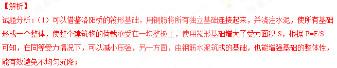
考点：减小压强的方法
43．如图 25 所示为洛阳桥船型桥墩的示意图，水流在桥墩前一分为二，沿柱面两侧向后流 动。
（1）请写出洛阳桥桥墩被设计成船型的优点；
（2）请你展开想象，就洛阳桥船型桥墩的设计理念，举例说明还可应用在哪些方面。
【答案】（1）洛阳桥桥墩被设计成船型有助于减小桥墩上游水面受到的水流的冲击作用，还能大大降低桥墩对水流的阻力，从而减小水流对桥墩的冲刷。（2）飞机、高铁的牵引机等。
【解析】
试题分析：
（1）洛阳桥桥墩被设计成船型有助于减小桥墩上游水面受到的水流的冲击作用，还能大大降低桥墩对水流的阻力，从而减小水流对桥墩的冲刷。
（2）飞机、潜艇、高铁的牵引机等，都做成流线型来减小阻力。
考点：流线型特点的应用
六、计算题
44．如图 26 所示，电源两端电压 U 保持不变，电阻 R1 的阻值为 6Ω，电阻 R2 的阻值为 18Ω。 当开关 S 闭合时，电压表示数为 3V。求：
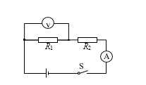
（1）电流表的示数 I；
（2）电源两端的电压 U。
【答案】（1）0.5A （2）12V
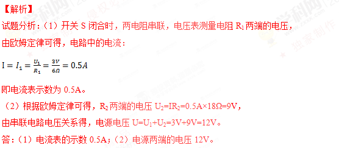
考点：欧姆定律的应用
45．图 27 是用滑轮组提升建筑材料 A 的示意图，在竖直向下的拉力 F 作用下，使重 900N 的建筑材料 A 在 5s 的时间里，匀速竖直上升了 1m，绳自由端匀速竖直向下移动了 2m。 在这个过程中，拉力 F 为 500N，滑轮组的机械效率为 η，拉力 F 做功的功率为 P。
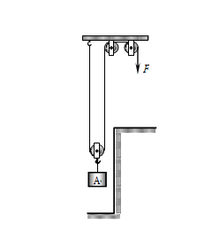
求：（1）滑轮组的机械效率 η；
（2）拉力 F 的功率 P。
【答案】（1）90% （2）200W
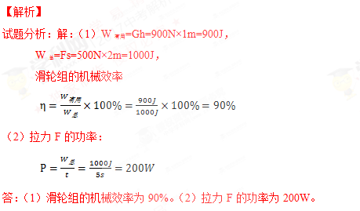
考点：滑轮组的机械效率 功率的计算